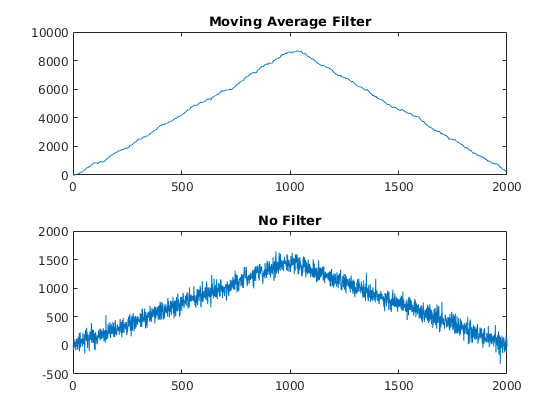

AD9081 Programmable FIR Filters (PFILT)
Following the ADCs are the Programmable FIRs (PFILTs) that can operate at maximum rates of the RX paths. The PFILTs are useful for channel equalization, image rejection, and generic filtering. The PFILTs also act as muxes into the CDDCs connected downstream on the RX path.
There are two PFILT blocks per AD9081 which operate on pairs of ADCs. The ADC pairs can be individually muxed based on requirements with Mux0
Top-Level Control
RX has a pair of PFILT each which are denoted by PFilterX, where X is 1 or 2 in the property listing. Therefore RX will have properties: PFilterXMode, PFilterXTaps, and PFilterXGains.
Operational Modes and Features
Each PFILT block is fundamentally a large 192 tap filter which can be split into:
1 192 tap filter
2 96 tap filters
3 64 tap filters (Matrix filter only)
4 48 tap filters
The filters are individually mapped to pairs of ADCs on the RX side based on the mode used. The PFILTs have eight configuration modes and the following notation will be used to describe the filtering modes:
x1: first input
x2: second input
y1: first output
y2: second output
F1: filter 1
F2: filter 2
F3: filter 3
F4: filter 4
p: length of filters (individually)
The different operational modes selectable through the PFilterXMode property are:
NoFilter: y1 = x1, y2 = x2, y3 = x2, y4 = x2
SingleInphase: y1 = F1(x1), y2 = x2
SingleQuadrature: y1 = x1, y2 = F1(x2)
DualReal: y1 = F1(x1), y2 = F2(x2)
HalfComplexSumInphase: y1 = F1(x1)+F2(x1), y2 = x2*z^-p
HalfComplexSumQuadrature: y2 = F1(x1)+F2(x1), y1 = x1*z^-p
FullComplex: y1 = F1(x1)-F3(x2), y2 = F1(x1)+F3(x2)-F2(x1+x2)
Matrix: y1 = F1(x1) - F3(x2), y2 = F2(x1) - F4(x2)
Example Configuration
Here is a basic example of a moving average filter applied on the RX path on one of the four ADCs.
rx = adi.sim.AD9081.Rx;
rx.PFIREnable = 1;
rx.PFilter1Mode = 'SingleInphase';
rx.PFilter2Mode = 'NoFilter';
N = 48; rx.PFilter1Taps = [ones(1,N)./2^3,zeros(1,192-N)];
rx.PFilter1TapsWidthsPerQuad = [...
16,16,16,16,16,16,16,16,16,16,16,16,...
12,12,12,12,12,12,12,12,12,12,12,12,...
6,6,6,6,6,6,6,6,6,6,6,6,6,6,6,6,6,6,6,6,6,6,6,6];...
rampVolts = 1.0*[(1./1e3.*(1:1e3)).';(1./1e3.*(1e3:-1:1)).'];
rampVolts = randn(size(rampVolts))./16+rampVolts;
[out1,out2,~,~,out3,out4] = rx(rampVolts,rampVolts,rampVolts,rampVolts);
outs = [out1,out2,out3,out4];
n = 1:2e3;
subplot(2,1,1);plot(n,real(outs(:,1)));title("Moving Average Filter")
subplot(2,1,2);plot(n,real(outs(:,2)));title("No Filter")
